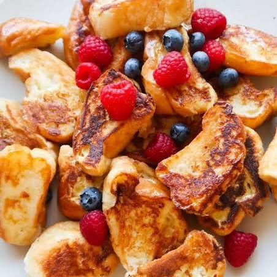

| Ingredients | Measurement |
|---|---|
| bread | 8 slices |
| eggs | 3 |
| milk | 3/4 cups |
| sugar | 2 tbsp |
| vanilla extract | 1 tsp |
| cinnamon | 1 tsp |
| butter | 2 tbsp |
In a bowl, whisk together the eggs, milk, sugar, vanilla, and cinnamon. Melt butter in large skillet or griddle over medium heat. Quickly dip each side of the bread into the custard mixture so it absorbs the flavor without turning soggy. Place the bread into the skillet. Cook each side for 2-3 minutes.